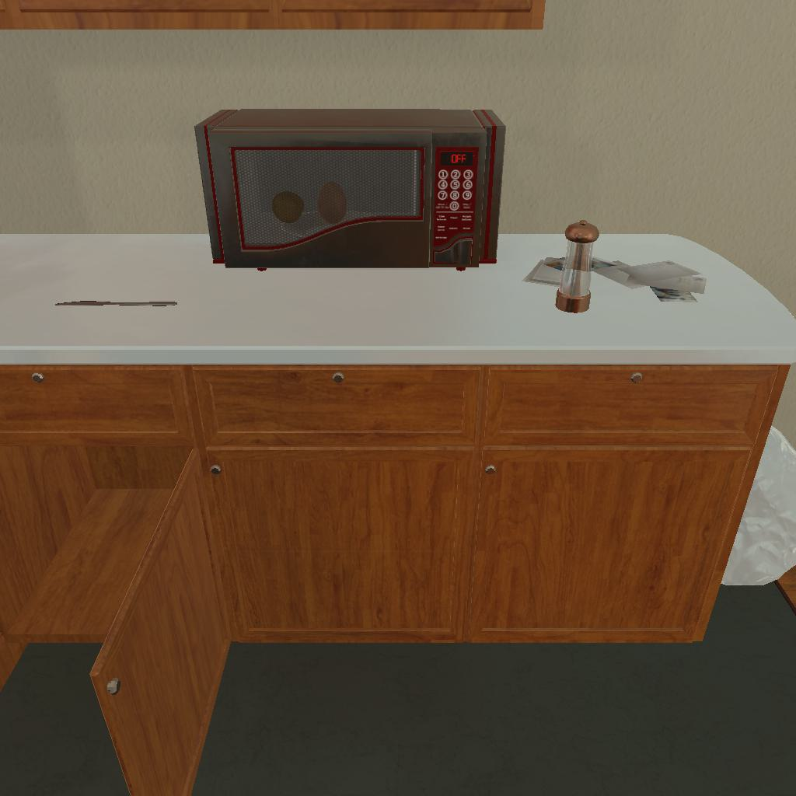

---------------------------------------------------------task: 17---------------------------------------------------------
--------------------------------------------------------------------------------------------------------------------------------------------------------------------
--------------------------------------------------------------------------------------------------------------------------------------------------------------------
Step:--------------------------------------------------------------------------13-------------------------------------------------------------------------------
----------------------------------------
VLM Prompt:
Image1:
Image2:
**Instruction**
1. Analyze the provided images to identify all visible household objects and compare the difference between images (e.h. whether the object is opened or not and taken on hand or not), focusing on those relevant to the task description "put a cool pan in stoveburner."
2. Use the analysis of images and the task hint "The agent must find an object of the desired type, pick it up, go to a fridge, cool the object with the fridge, then find the correct location to place it, and put it down there. The agent does not need to use the fridge button or open the fridge to cool the object, and the agent just needs to do action that is "cool the object with the fridge"." to answer the question: what is the most reasonable action in the choices for the task description "put a cool pan in stoveburner"?
3. Decide and write the answer using the template: The answer is: (i): , where i is the real number. If there is no desired object in images, search every place based on **Initial Observation** to find the object. And if no one is exactly correct, choose a similar answer.
**Initial Observation**
You are in the middle of a room. Looking quickly around you, you can see cabinet (1-14), countertop (1-2), microwave (1), drawer (1-5), sink (1), sinkbasin (1), coffeemachine (1), stoveburner (1-4), toaster (1), fridge (1), diningtable (1), garbagecan (1), safe (1)
**Answer Choices**
(1): go to cabinet 3
(2): go to countertop 1
(3): go to cabinet 4
(4): go to cabinet 5
(5): go to microwave 1
(6): go to cabinet 6
(7): go to drawer 2
(8): go to drawer 3
(9): go to cabinet 7
(10): go to cabinet 8
(11): go to sink 1
(12): go to sinkbasin 1
(13): go to coffeemachine 1
(14): go to cabinet 9
(15): go to cabinet 10
(16): go to drawer 4
(17): go to cabinet 11
(18): go to stoveburner 1
(19): go to stoveburner 2
(20): go to stoveburner 3
(21): go to stoveburner 4
(22): go to cabinet 12
(23): go to toaster 1
(24): go to drawer 5
(25): go to countertop 2
(26): go to fridge 1
(27): go to cabinet 13
(28): go to cabinet 14
(29): go to diningtable 1
(30): go to garbagecan 1
(31): go to safe 1
(32): open drawer 1
(33): close drawer 1
(34): examine drawer 1
**Answer**
Let's think step by step by following the instructions.
----------------------------------------
----------------------------------------
Original Response:
First, we analyze the provided images:
Image1 shows a wooden surface, which appears to be a closed drawer.
Image2 shows a kitchen countertop with a red microwave, a metal object (potentially a pan or pot), and some papers. Below the countertop, we see several wooden cabinets, one of which (the second from the left) is open, revealing another wooden surface inside, possibly another drawer or a shelf.
Now, considering the task description "put a cool pan in stoveburner," we need to find a pan, cool it with the fridge, and then place it on a stoveburner.
From the Initial Observation, we know that there is a microwave (1), which is visible in Image2 but does not contain a pan. We also know there is a fridge (1) somewhere in the room, which we need to find and use to cool the pan.
Since Image2 shows an open cabinet and a potential pan on the countertop, the most reasonable actions are to pick up the pan from the countertop and cool it with the fridge. However, since the task specifies that we do not need to use the fridge button or open the fridge to cool the object, we just need to do the action "cool the object with the fridge."
Based on the images provided and the task hint, we do not see a fridge, so we cannot directly cool the object. Therefore, we need to search for the fridge in the room.
The most reasonable action from the choices provided would be to go to the fridge to cool the pan and then place it on the stoveburner. Since we don't see the fridge in the images, we will have to search for it based on the Initial Observation.
The answer is: (26): go to fridge 1
----------------------------------------
----------------------------------------
>>> Refine Original VLM Response and Get Pure Action: go to fridge 1
----------------------------------------
-----------------------------------------------------------------
Running time: 18.800904273986816 seconds
Total Money: 8.363620000000003
-----------------------------------------------------------------
-----------------------------------------------------------------
Text Observation:You arrive at loc 28. The fridge 1 is closed.
-----------------------------------------------------------------
UNSUCCEED